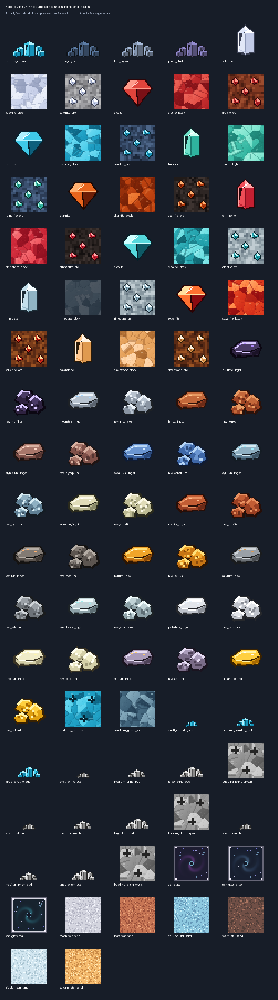
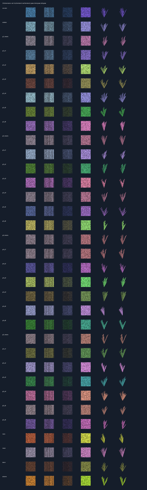
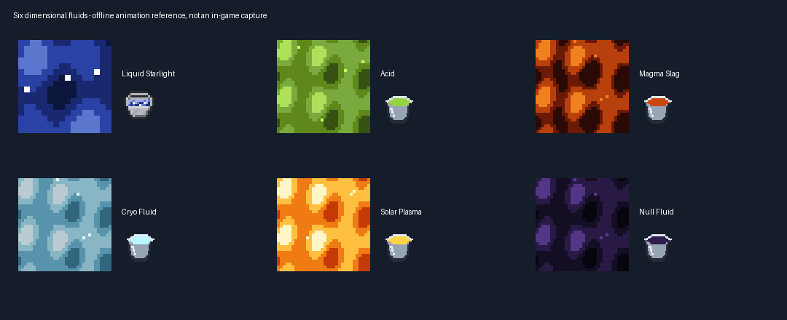
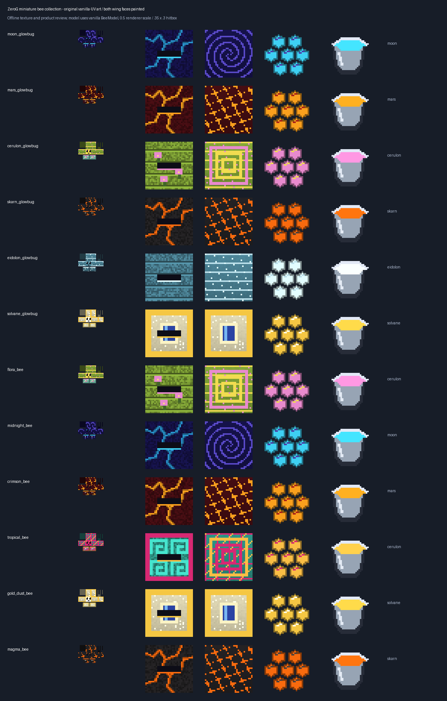
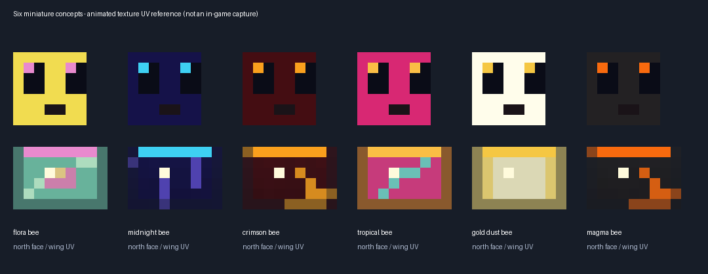
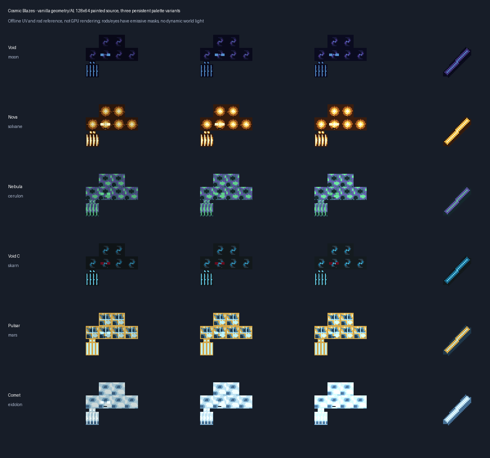
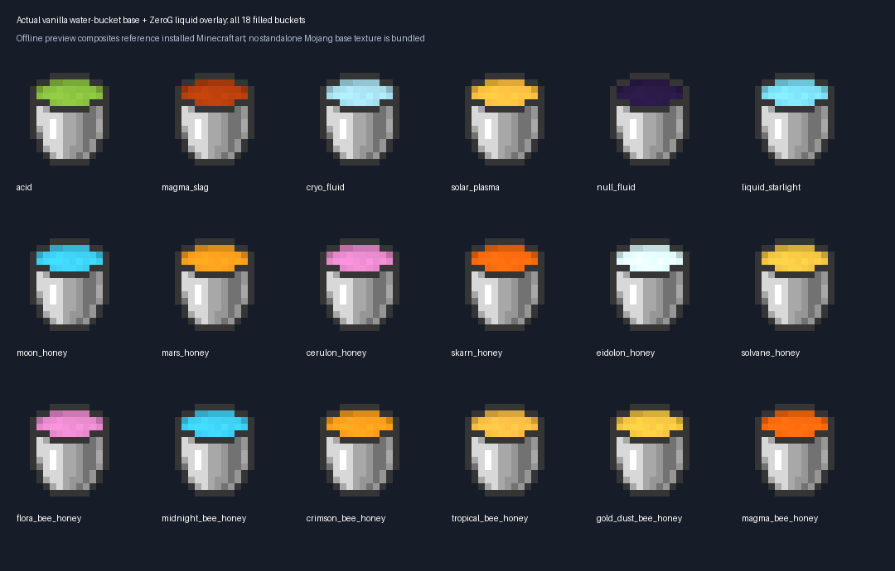

Offline authored texture references and editable projects, not in-game screenshots. Java runtime uses vanilla Bee/Blaze rigs. No client visual approval or dynamic-light shader claim.
Current documentation / development jar · Historical catalogue








The six initial ecology bug studies are retained for provenance but omitted here, superseded by the current bee revision. Legacy catalogue hashes are unchanged. Entity PNG animation and emissive support are runtime features; bind-pose project files are not proof of client rendering.